Your Hero: A Third-Person Player
Put your own 3D character into the arena and control it: WASD to walk, the mouse to look around, and Space to jump. This lesson is for single player. Multiplayer builds on this player in a later lesson.
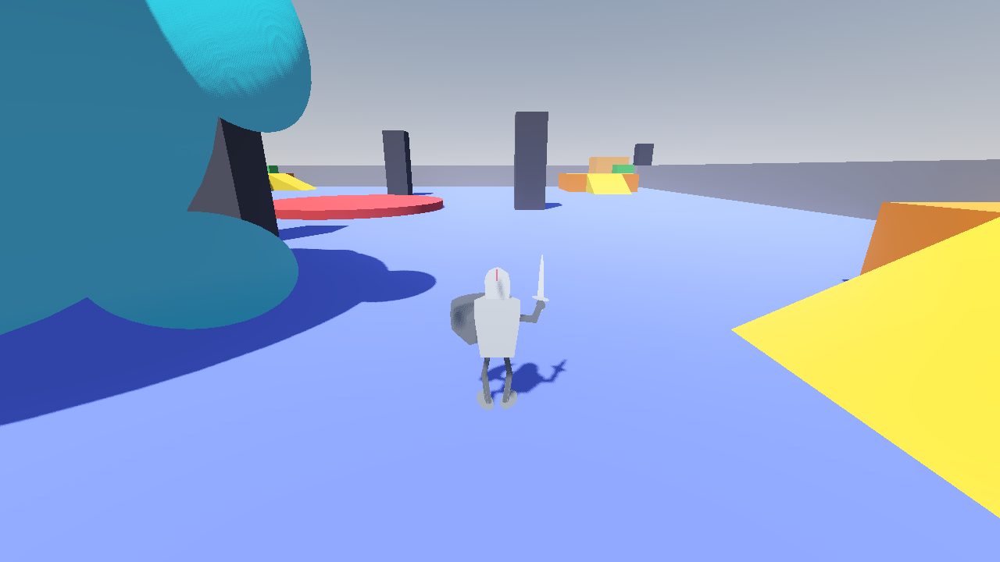
| Key | Action |
|---|---|
| W A S D | Walk forward, left, back and right (relative to where the camera looks) |
| Mouse | Turn the camera |
| Space | Jump |
| Esc | Show the mouse again. Click inside the game to hide it. |
- How to use your own .glb character and get its size and direction right
- How the Input Map gives names to keys
- How CharacterBody3D moves and jumps with
move_and_slide() - How to build a third-person camera with SpringArm3D
- How to keep the map, the player and the game in separate scenes
1Import your character
- Drag your character's
.glbfile into thecharacter/folder. In this project it'scharacter/character1.glb. - That's it. Don't turn on Physics in the import settings. The player gets its own collision shape (a capsule) in Step 3.
In Lesson 1, map blocks needed Trimesh collision because players stand on them. A player is different. A detailed mesh collision on a moving character is slow and snags on everything. A simple capsule slides smoothly over floors, ramps and steps.
Check three things about your model
| Check | What you want | Our knight |
|---|---|---|
| Size | About 1.6–2 m tall | Tinkercad exports in millimeters, so the knight comes in 71 m tall. Scale it by 0.025 to make it 1.8 m. |
| Feet | The feet at Y = 0, centered over the origin | The feet are at 0, but the model is off to one side. Move it by (-0.12, 0, 0.42). |
| Front | Which way the face looks | It faces +Z, the standard front for .glb files. We'll turn it in Step 3. |
Scale = the height you want ÷ the model's height. The knight is 71 units tall and we want 1.8 m: 1.8 ÷ 71 ≈ 0.025. Select the model and look at the orange box in the 3D view to see its height.
The knight from Tinkercad has no skeleton and no animations, so it slides and turns but doesn't walk. That's fine for now. Animated characters (for example from Mixamo) can replace it later without changing this lesson's code.
2Name your keys in the Input Map
The code never says "the W key". It asks for an action such as move_forward, and the Input Map decides which key triggers it. Then you can change keys, or add a gamepad later, without touching the code.
- Open Project → Project Settings… and click the Input Map tab.
- Type
move_forwardin the Add New Action box and click + Add. - Click the + at the right of the new action, press W, then click OK.
- Repeat for all five actions below.
| Action name | Key |
|---|---|
move_forward | W |
move_back | S |
move_left | A |
move_right | D |
jump | Space |
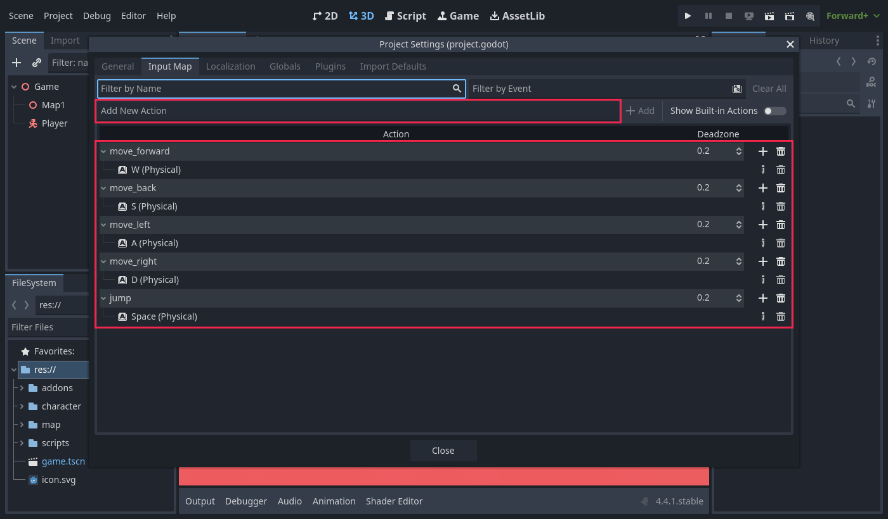
The names must match the script letter for letter: all lowercase, with an underscore. Move_Forward or move forward won't work, and the game prints an error saying the action doesn't exist.
3Build the Player scene
This is the tree you'll build. Each node has one job:
Player (CharacterBody3D) ← moves and collides ├── CollisionShape3D ← capsule: the body you bump into things with ├── Model (Node3D) ← turns to face the way you walk │ └── character1 ← your .glb (scaled and centered) └── CameraPivot (Node3D) ← turns left and right with the mouse └── SpringArm3D ← tilts up and down, keeps the camera out of walls └── Camera3D ← what the player sees
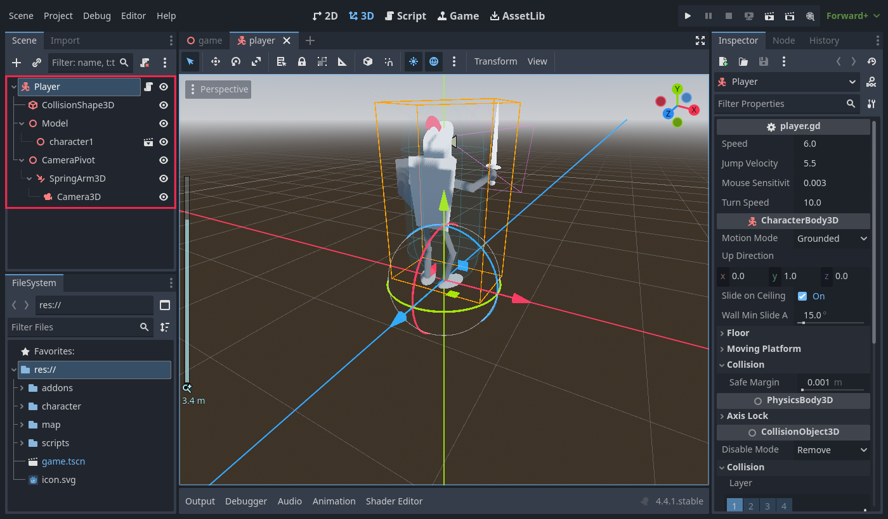
When you walk left, the character should turn left but the camera should stay put. When you move the mouse, the camera should turn but the character shouldn't. Because the two are separate nodes, each can turn on its own.
3a. The body
- Choose Scene → New Scene → Other Node and pick CharacterBody3D. Rename it
Player. - Add a child CollisionShape3D. Set Shape → New CapsuleShape3D, then click the capsule and set Radius
0.4and Height1.8. - Set the CollisionShape3D's Transform → Position Y to
0.9(half the height), so the bottom of the capsule is at the feet.
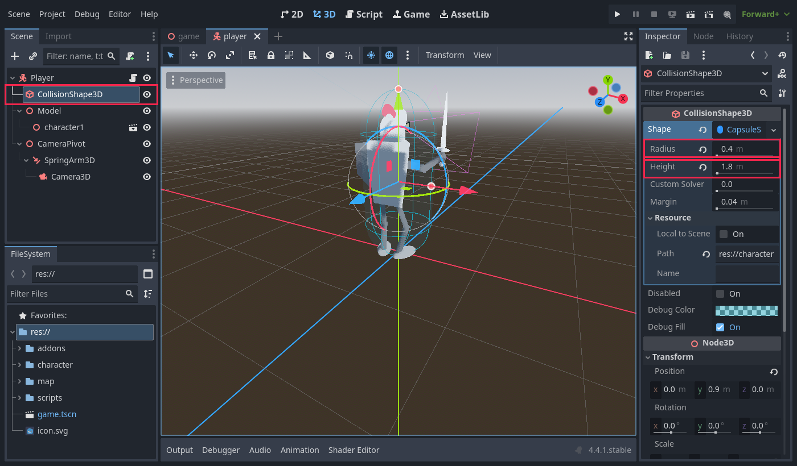
3b. The model
- Add a child Node3D to Player and name it
Model. - Drag
character1.glbfrom FileSystem ontoModel. - Select the character1 node. Set Scale to
0.025and Position to(-0.12, 0, 0.42), so the knight stands inside the capsule. - Select Model and set Rotation Y to
180.
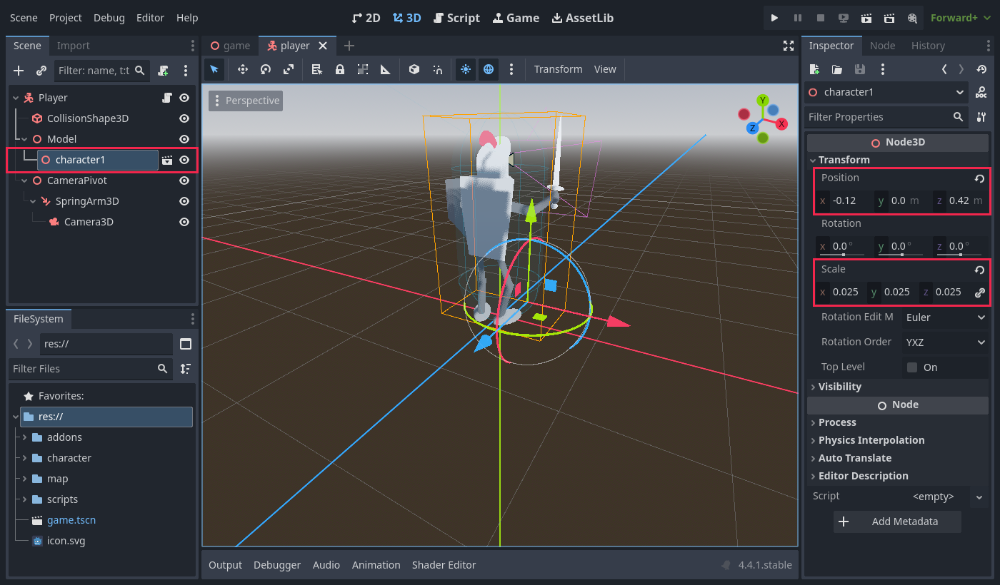
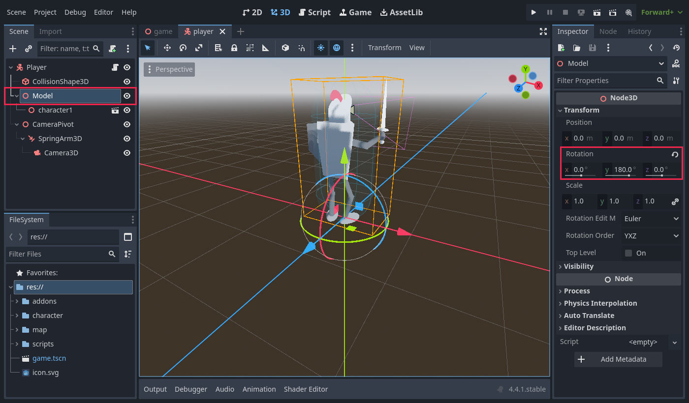
A .glb character faces +Z, but a Godot camera looks toward −Z. Without the turn, the game starts with the character facing you like in a selfie. Turning Model (not the .glb inside it) keeps the size and position you just set.
3c. The camera
- Add a child Node3D to Player, name it
CameraPivot, and set Position Y to1.5(about head height). - Add a SpringArm3D as a child of CameraPivot. Set Spring Length to
4, Margin to0.2, and Rotation X to-17so the camera looks down a little. - Add a Camera3D as a child of SpringArm3D. Leave its settings as they are.
- Save as
character/player.tscn.
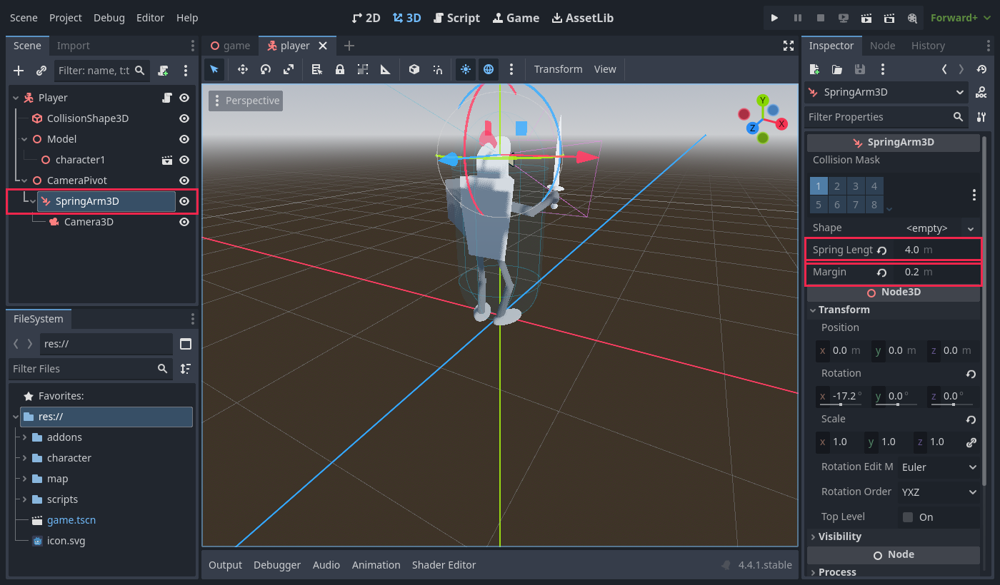
It's like a selfie stick. It holds the camera 4 m away, but if a wall or pillar gets between the camera and the character, it pulls the camera in closer. That way the camera never ends up inside a wall.
4The player script
- Right-click Player and choose Attach Script…
- Set the path to
res://scripts/player.gd. For Template, choose Object: Empty. (The "Basic Movement" template is fine too, but you'll replace all of its code.) - Click Create and type in the code below.
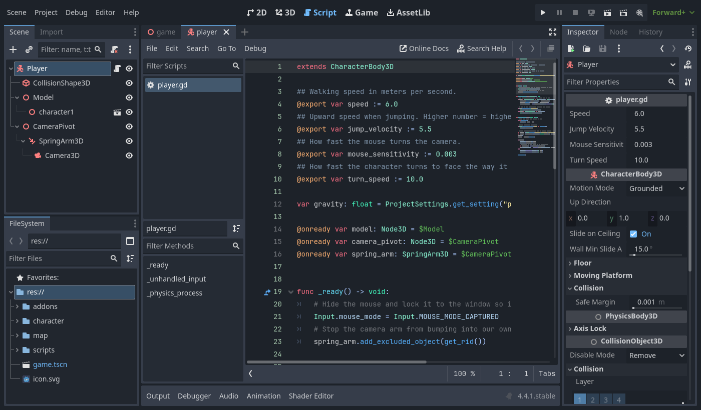
player.gd open.extends CharacterBody3D ## Walking speed in meters per second. @export var speed := 6.0 ## Upward speed when jumping. Higher number = higher jump. @export var jump_velocity := 5.5 ## How fast the mouse turns the camera. @export var mouse_sensitivity := 0.003 ## How fast the character turns to face the way it walks. @export var turn_speed := 10.0 var gravity: float = ProjectSettings.get_setting("physics/3d/default_gravity") @onready var model: Node3D = $Model @onready var camera_pivot: Node3D = $CameraPivot @onready var spring_arm: SpringArm3D = $CameraPivot/SpringArm3D func _ready() -> void: # Hide the mouse and lock it to the window so it can turn the camera. Input.mouse_mode = Input.MOUSE_MODE_CAPTURED # Stop the camera arm from bumping into our own body. spring_arm.add_excluded_object(get_rid()) func _unhandled_input(event: InputEvent) -> void: # Mouse left/right turns the pivot, mouse up/down tilts the arm. if event is InputEventMouseMotion and Input.mouse_mode == Input.MOUSE_MODE_CAPTURED: camera_pivot.rotate_y(-event.relative.x * mouse_sensitivity) spring_arm.rotate_x(-event.relative.y * mouse_sensitivity) spring_arm.rotation.x = clamp(spring_arm.rotation.x, deg_to_rad(-70), deg_to_rad(20)) # Esc shows the mouse again; clicking in the game hides it again. if event.is_action_pressed("ui_cancel"): Input.mouse_mode = Input.MOUSE_MODE_VISIBLE elif event is InputEventMouseButton and event.pressed: Input.mouse_mode = Input.MOUSE_MODE_CAPTURED func _physics_process(delta: float) -> void: # Gravity pulls us down while we are in the air. if not is_on_floor(): velocity.y -= gravity * delta # Jump only when standing on something. if Input.is_action_just_pressed("jump") and is_on_floor(): velocity.y = jump_velocity # Turn WASD into a direction based on where the camera is looking. var input_dir := Input.get_vector("move_left", "move_right", "move_forward", "move_back") var direction := camera_pivot.global_basis * Vector3(input_dir.x, 0, input_dir.y) direction.y = 0 direction = direction.normalized() if direction: velocity.x = direction.x * speed velocity.z = direction.z * speed # Smoothly turn the model to face the way we are walking. var target_angle := atan2(direction.x, direction.z) model.global_rotation.y = lerp_angle(model.global_rotation.y, target_angle, turn_speed * delta) else: velocity.x = move_toward(velocity.x, 0, speed) velocity.z = move_toward(velocity.z, 0, speed) move_and_slide()
How it works
| Part | What it does |
|---|---|
@export var … | Settings that show up in the Inspector, so you can change speed and jump height without editing code (see the picture below). |
@onready var … | Finds the nodes the script needs ($Model, $CameraPivot…) once the scene is ready. |
_ready() | Runs once at the start. Hides the mouse and locks it to the game window, and tells the spring arm to ignore the player's own body. |
_unhandled_input() | Runs on every input event. Moving the mouse sideways turns CameraPivot, and up and down tilts SpringArm3D. clamp stops the camera from flipping over. Esc shows the mouse. |
_physics_process() | Runs 60 times a second. It adds gravity, starts a jump, works out which way is forward from the camera's point of view, turns the Model that way, and moves with move_and_slide(). |
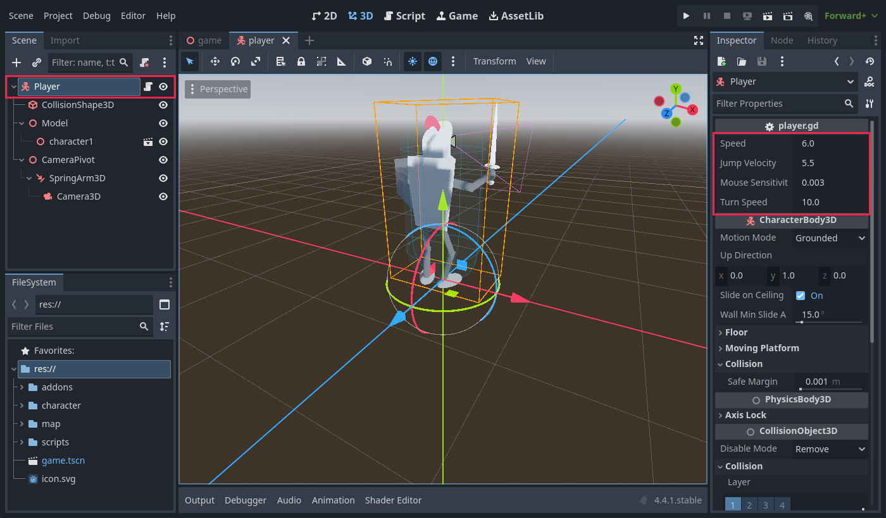
@export variable shows up in the Inspector when you select Player.Input.get_vector() turns WASD into a 2D direction. Multiplying it by camera_pivot.global_basis rotates it to match where the camera is looking. That's why W always walks "into the screen", whichever way you've turned the mouse.
5Put it together in a Game scene
- Create a new scene with a Node3D root named
Game. - Drag
map/map1.tscnontoGame, then dragcharacter/player.tscnontoGame. - Select Player and set Position to
(-10, 0, -22)and Rotation Y to180, so the player starts at the edge of the arena facing the middle. - Save as
game.tscn(inres://).
Game (Node3D) ├── Map1 ← the arena from Lesson 1 └── Player ← your hero
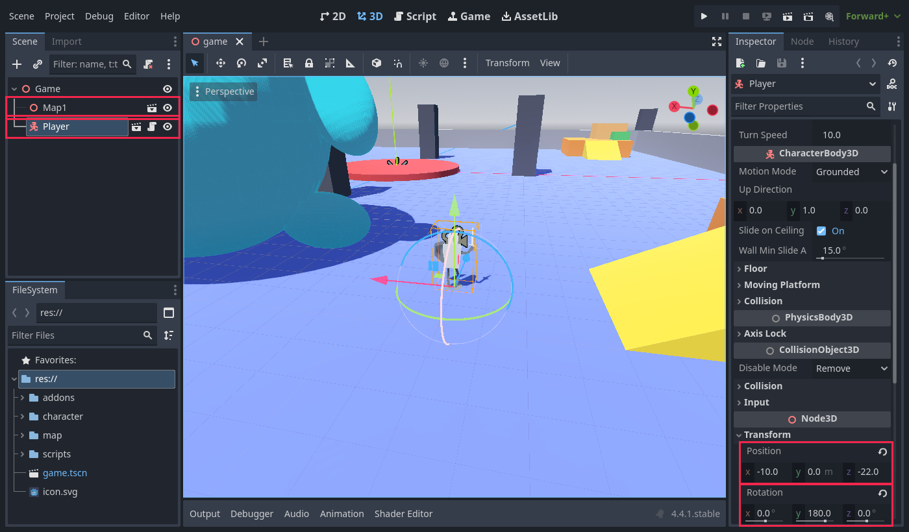
The map stays just a map, and the player stays just a player. For multiplayer, the Game scene will add one Player per person, and neither the map nor the player scene needs to change.
6Set the main scene and play
The main scene is what starts when you press F5 (the ▶ button). In Lesson 1 it was the map. Now it should be the Game.
- Open Project → Project Settings… → General.
- Type
main scenein the filter box and click Application → Run. - Set Main Scene to
res://game.tscnusing the folder button.
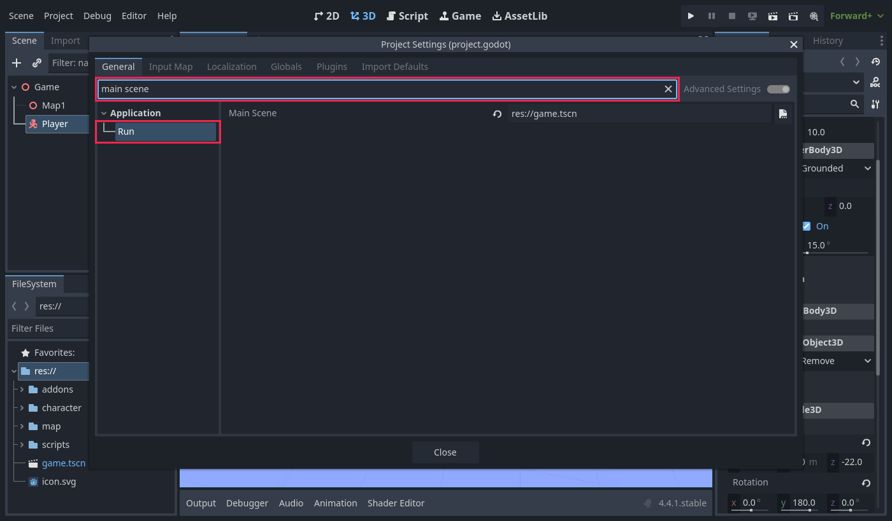
res://game.tscn. Shortcut: right-click game.tscn in FileSystem and choose Set as Main Scene.Press F5. Walk around, climb a ramp onto a corner platform, and jump onto the green step.
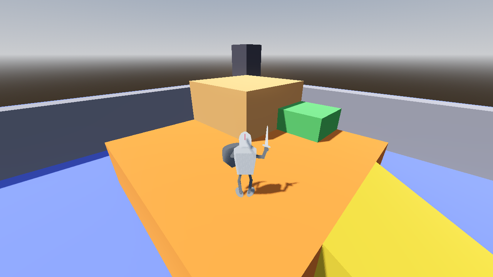
7Tuning
Select Player in player.tscn and change these in the Inspector. Press F5 to feel the difference.
| Setting | Default | Effect |
|---|---|---|
| Speed | 6.0 | Walking speed in meters per second. |
| Jump Velocity | 5.5 | Jump height. 5.5 gives about 1.6 m, and 4.5 about 1 m (too low for the steps). |
| Mouse Sensitivity | 0.003 | Camera turn speed. Try 0.002 for slower or 0.005 for faster. |
| Turn Speed | 10.0 | How quickly the knight turns to face the way it walks. |
| SpringArm3D → Spring Length | 4 | How far the camera is behind the character. |
8Troubleshooting
| Problem | Cause and fix |
|---|---|
| Error: The InputMap action "move_forward" doesn't exist | An action is missing or spelled differently. Check the Input Map (Step 2). |
| The character faces the camera at the start | Set Model Rotation Y to 180 (Step 3b). |
| The character floats or sinks into the floor | Change the Y position of the .glb node, and make sure the capsule's Position Y is half its height. |
| The character falls through the map | A map block has no collision (see Lesson 1), or the player starts inside a block. |
| The camera jumps around or is stuck inside the character | Make sure _ready() has spring_arm.add_excluded_object(get_rid()). |
| Moving the mouse up looks down | That's inverted Y. Remove the - in front of event.relative.y if you prefer it. |
| F5 starts the map instead of the game | Change the main scene (Step 6). |
| The mouse is stuck in the game window | Press Esc. |
9Checklist and challenges
Before moving on, check that:
- The five actions are in the Input Map
- The character is about 1.8 m tall and stands inside its capsule
- At the start you see the character's back
- W walks the way the camera looks, and the character turns to face that way
- You can climb the ramp and jump up the steps to the lookout
- The camera doesn't go through walls
Challenges
- Sprint: add a
sprintaction (Shift) and double the speed while it's held. - Zoom: use the mouse wheel to change
spring_arm.spring_lengthbetween 2 and 8. - Double jump: allow one extra jump in the air, and reset it when you land.
- Your own hero: make or download another .glb character and swap it in. Only Step 3b changes.